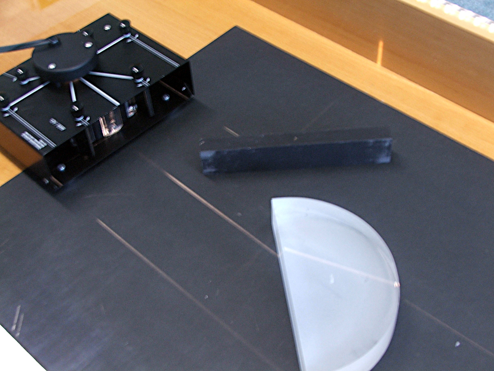

Light reflection and refraction
When we place a barrier with a slit in front of a light source, only the light rays in the lines that go through the source and the slit can go through the barrier. That way we can produce a thin light beam.
That fact is an argument in favor of the corpuscular theory of light, which asserts that light is composed of small particles ejected in straight lines from the source.
Light is reflected in a plane mirror with the incident and reflected rays making the same angle with the surface of the mirror. That's what we would expect from a system of small particles hitting a rigid surface.
Light refraction is the passage of a ray of light from one medium to a different one. In that case, the angles of the incident ray and the refracted one with the surface dividing the two media are not the same. The relation between those two angles depends on the two media. The corpuscular theory of light explains that difference by assuming that the speed of light is different in the two media.
The wave theory of light can also explain how beams of light are formed as well and the equality of the incidence and reflection angle and the difference between the angles of the incident and refracted rays. However, its arguments for those phenomena are not as straight forward as in the corpuscular theory.
In the case of refraction there is an important difference between the predictions of the two theories. When light passes from air to water, the refracted ray comes closer to the perpendicular to the boundary surface. According to the corpuscular theory that approximation is due to a higher speed of light in water as compared to air. In the wave theory it is concluded that the speed of light is lower in water then in air.
In Newton's and Huygen's time (XVII century) the speed of light could not be measured with enough accuracy to determine which theory was right, so the stronger reputation of Newton prevailed and the corpuscular theory was preferred over the wave theory. Nowadays we know that light moves slower in water than in air as predicted by the wave theory.